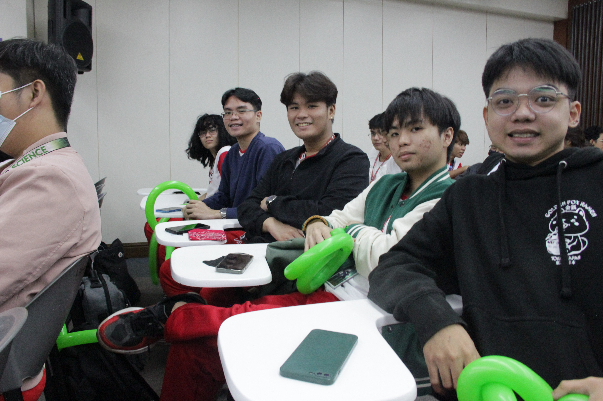
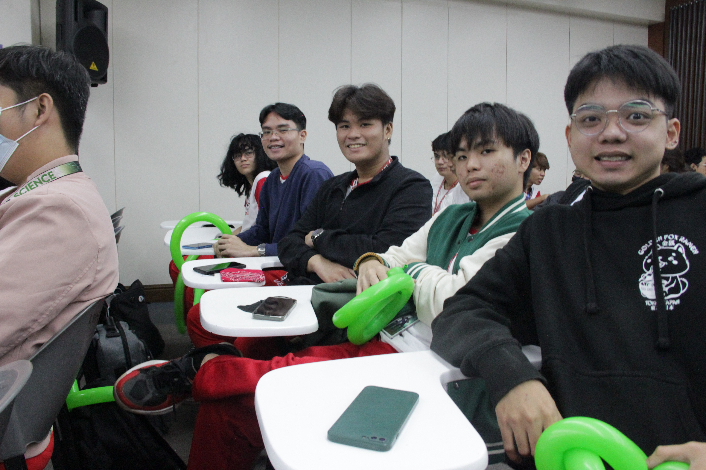
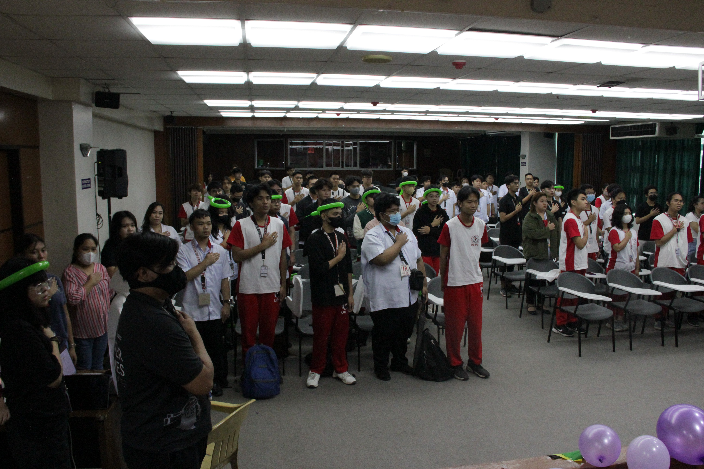
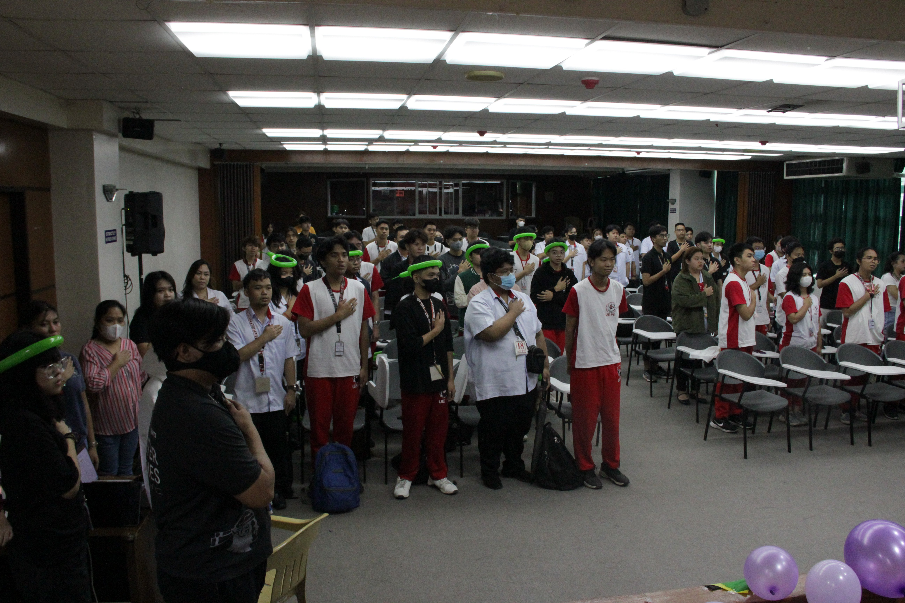

To provide ideas and information about Computer Science, Data Science, and Information Technology courses, subjects, and possible career paths.
To aid with the development of skills and talents, not just academically, but to excel as well in extra-curricular.
 


The Association of Computer Studies Students is a Recognized Student Organization in the University of the East - Caloocan Campus open to all Computer Studies students such as Information Technology, Computer Science, and Data Science.
ACSS helps its members of the community to enhance their knowledge in the Computer field since it provides a series of webinars and seminars for the past few years.
Aside from being active in providing different academic events, ACSS is also known for implementing events that requires interaction with their fellow Computer Studies students to have some fun and connect with each other.
 

As administered by different professors and students over the decade, the organization has been the home of many graduates with Information Technology Education specialization at the University of the East - Caloocan. Today, many of these members have proven their excellence in their chosen fields.
The official Facebook account of the organization was created just more than 10 years ago, in 2010. Where, ever since, the documentation of the successes of the organization have been proudly shared in the virtual world.
The earliest event documented on the said account pictures the ACSS batch of 2010 conduct their general assembly. In 2011, one of the prominent events hosted was the seminar about MySQL Database. In 2014, the Arduino Microcontroller Seminar happened. Moreover, the ACSS Basketball League 2015 and 2016 occurred in the next two year. In 2017, the Tech World Today and ACSS: PerDev seminars took place. In 2020, the esteemed BrainiACSS transpired. The next edition of the event happened, two years later, in 2022. In 2023, the administration under Mr. Kervie Pablo accomplished numerous seminar and assemblies for its current members.